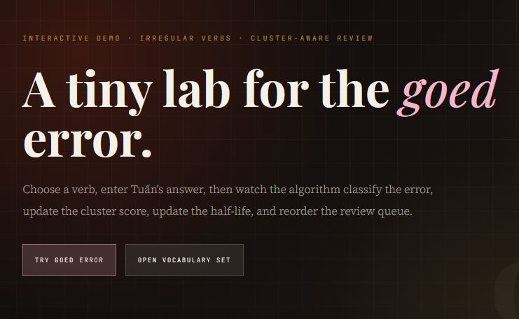
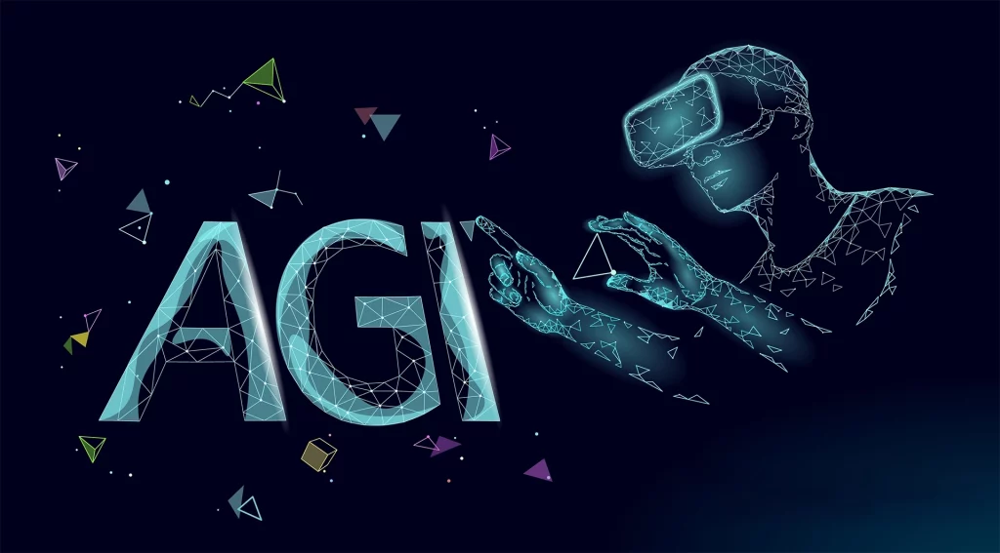

Readiness debt: khi AI nhanh hơn sự sẵn sàng
AI có thể tạo mười module trong thời gian trước đây chỉ đủ làm một, nhưng nó không tự tạo thêm năng lực review, đo lường và xác minh tác động thật.
Đọc bài →Tg muốn Sakura im lặng
Một fieldnote về app học động từ bất quy tắc, Sakura, game hóa học tập và khoảnh khắc phải tách can thiệp khỏi đo lường để dữ liệu đáng tin hơn.
Đọc bài →
Tank Day và câu hỏi L&D không ai hỏi
Starbucks Korea không thất bại chỉ vì AI hay đội marketing. Điều đáng hỏi hơn là vì sao 7 tầng phê duyệt không tạo ra nổi một điểm dừng.
Đọc bài →Ba người thầy trong Jujutsu Kaisen và ba triết lý giảng dạy
Gojo, Nanami, Yaga trong JJK không chỉ là nhân vật anime. Nhìn qua lens instructional design, họ là ba archetype sư phạm mà bất kỳ người làm L&D nào cũng sẽ nhận ra ngay.
Đọc bài →
Khi goed trở thành dữ liệu
Từ lỗi goed đến dữ liệu học tập: một bài tiếp nối về cách biến câu trả lời sai thành tín hiệu cho thuật toán ôn tập, rồi để người đọc tự tạo dữ liệu và xem báo cáo riêng của mình.
Đọc bài →Người giỏi nhất chính là tài liệu training tốt nhất
Một góc nhìn về bài toán đào tạo của Pizza 4P's: khi kiến thức quý giá nhất nằm trong đầu những nhân viên giỏi nhất, chứ không nằm trong slide orientation.
Đọc bài →
AGI và đường viền răng cưa: quyết định đào tạo hôm nay dựa vào điều gì?
Dự đoán AGI dao động từ 2026 đến sau 2100, nhưng thứ đáng quan tâm hơn là ranh giới giữa cái AI làm được và cái AI chỉ trông như làm được.
Đọc bài →Khi go biến thành goed: một thuật toán thú vị
Lỗi goed không chỉ là quên từ, mà là dấu hiệu người học đang áp nhầm một luật lên cả nhóm động từ, từ đó mở ra cách thiết kế thuật toán ôn tập thông minh hơn.
Đọc bài →
LMS không chết, nó chỉ đang bị AI bắt phải trưởng thành
Từ Blackboard, Moodle, Canvas đến AI và LXP, một bài viết về cách LMS đang bị buộc phải đổi vai trong thời đại học tập số.
Đọc bài →
Sự tập trung của bộ não và bức tranh đào tạo
Vì sao nhân viên quên gần hết nội dung đào tạo, và cách microlearning cùng AI có thể biến học tập thành luyện tập đúng lúc.
Đọc bài →
Liệu người thầy có thật sự biến mất?
Từ "oracle" duy nhất nắm giữ tri thức, đến máy kiểm tra tự động, đến AI tutor: một câu chuyện dài về cách công nghệ làm thay đổi vai trò của người thầy.
Đọc bài →